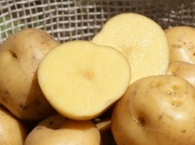
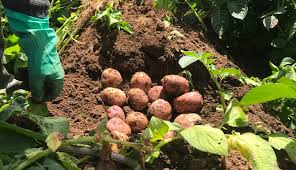
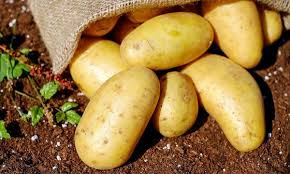

La papa, conocida científicamente como Solanum tuberosum, es un tubérculo originario de los Andes, especialmente de Perú y Bolivia. Es un alimento básico en muchas culturas y se utiliza en una variedad de platos a nivel mundial.
Video obtenido de: Bayer Andina y CAC

Variedad pequeña y dulce, ideal para platos tradicionales.
Variedad con textura harinosa, ideal para preparar papas al horno o purés.
Variedad de piel amarilla y pulpa firme, perfecta para cocinar al vapor y en guisos.
| Aspecto | Descripción |
|---|---|
| Clima | Prefiere climas templados a fríos, con temperaturas entre 10 °C y 20 °C. |
| Suelo | Requiere suelos bien drenados, ricos en materia orgánica y ligeramente ácidos. |
| Riego | Necesita riego regular, especialmente durante el crecimiento y la formación de tubérculos. |
| Plagas y Enfermedades | Puede ser susceptible a plagas como el escarabajo de la papa y enfermedades como el tizón tardío. |
| Recolección | Los tubérculos se cosechan cuando están maduros, generalmente a mano. |